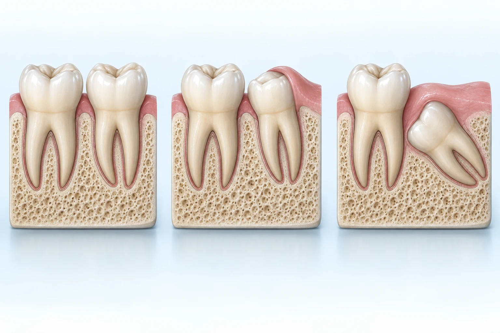
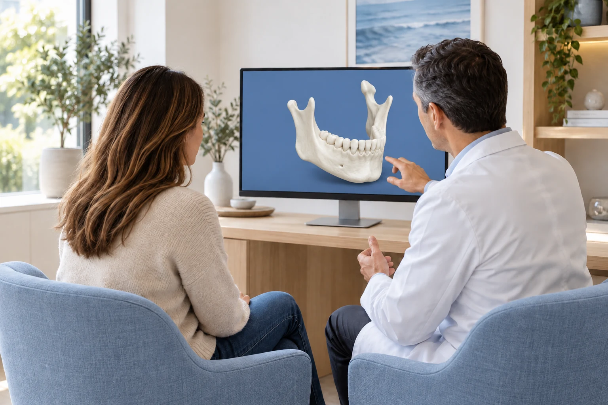
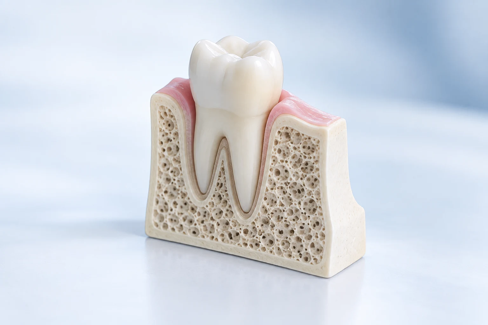
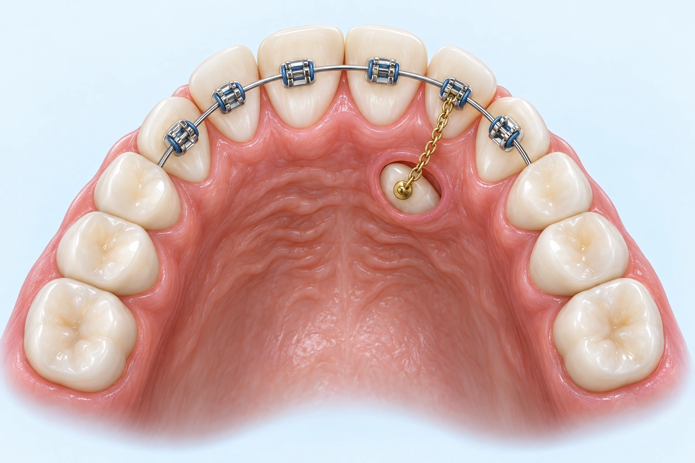
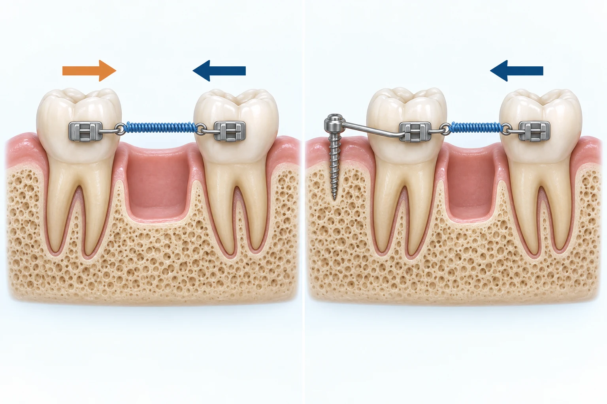

 Mehr erfahren
Mehr erfahrenWeisheitszähne
Wann eine Entfernung sinnvoll ist und wie die Behandlung abläuft.
Thema auswählen. QR-Code mit der Handykamera scannen. In Ruhe lesen.

Mehr erfahrenWann eine Entfernung sinnvoll ist und wie die Behandlung abläuft.

 Mehr erfahren
Mehr erfahrenWas dreidimensionale Bilder zeigen und wann sie bei der Planung helfen.
Wie ein Implantat aufgebaut ist und welche Möglichkeiten es bietet.

 Mehr erfahren
Mehr erfahrenWarum ein stabiles Knochenlager wichtig ist und wie es aufgebaut werden kann.

 Mehr erfahren
Mehr erfahrenFreilegung und Zugkette: Wie ein zurückgehaltener Zahn eingeordnet werden kann.

 Mehr erfahren
Mehr erfahrenWie kleine Verankerungen gezielte Zahnbewegungen unterstützen.